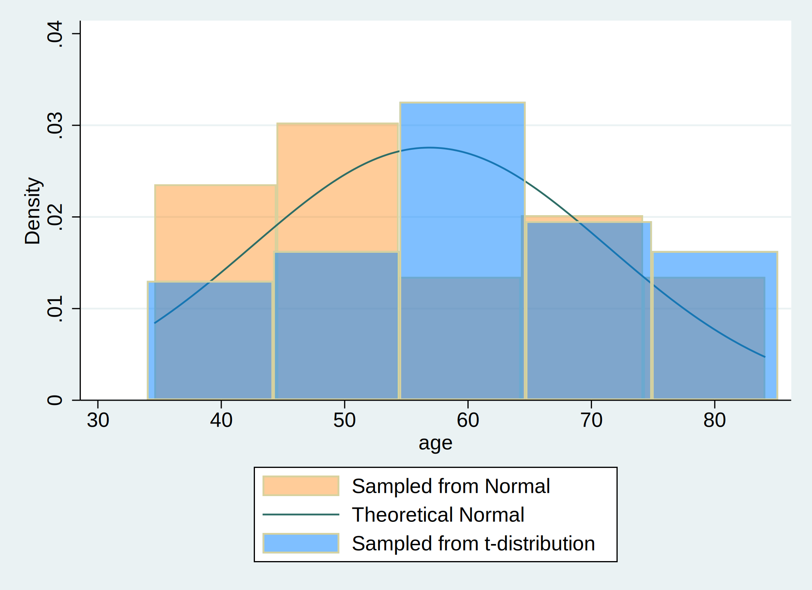

Background: A user downloads and installs a system of program files, mostly ado-files, which form the foundation of most of the commands used in Stata Programming. Using those commands and additional syntax written out sequentially in a do-file, the user creates well-formed instruction to Stata called a do-file script. Once the user runs this script, results are generated and displayed in the results window, in a graph, or in a format (.xlsx, .log, .dta, .docx, .md, LaTeX, .html, etc). The .html file format is of specific interest since its the pathway to self-publication. To illustrate how this may be achieved in Stata, we hereby introduce the dyndoc command.
Methods: We created a do-file and populated it with this abstract using markdown language. Anything in this document that is not ordinary text including <<dd_version: 2>>, <<dd_do:nooutput>>, <</dd_do>>, <<dd_display: c(N)>> is a markup. Input & output that might be numeric, string, alphanumeric, or formatted as macros are embeded at these markedup points. We then saved this document using the file extension .do; however, any text file extension will work (.txt, .md, .do, etc). To the pwd where we saved this text file, we added a cascading style sheet stmarkdown.css and header.txt to enhance the aesthetic of our .html file. Finally, we typed the following command into the Stata command window: dyndoc filename.do, saving(filename.html) replace. In the key analysis, $Y = \beta_0 + \beta_1 X$, where $Y$ is life expectancy at birth in years, the outcome or dependent variable; $X$ is the country, the predictor or independent variable being tested.
Graph:
. cls
. clear
. set obs 30
. gen age = (rnormal() * 15) + 57
. gen age_t=(rt(_N)*15)+57
.
. hist age, ///
> fcolor(orange%40) /// simulated normal
> addplot(hist age_t, fcolor(midblue%50)) /// simulated t-distribution
> normal /// theoretical normal
> legend(on ///
> lab(1 "Sampled from Normal") ///
> lab(2 "Theoretical Normal") ///
> lab(3 "Sampled from t-distribution") ///
> )
.
. graph export hist_age.png, replace

The results are based on simulated data
Distribution of $${ Age, years} \sim \mathcal{N}(\mu=57,\sigma^2=225)$$
. . .